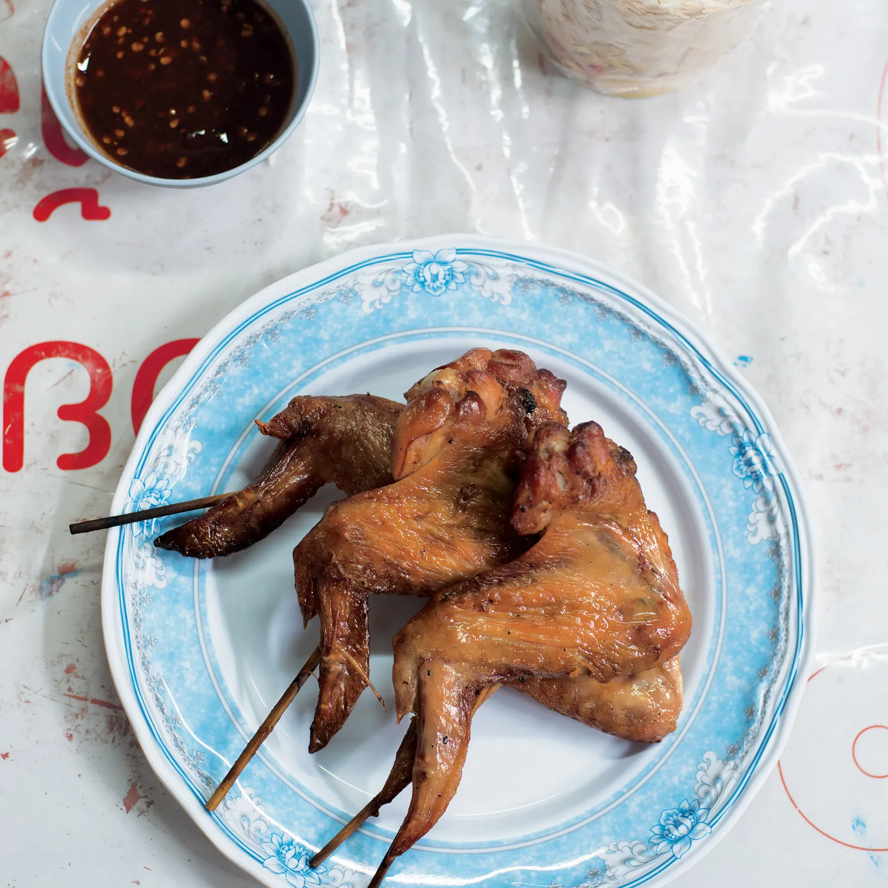

Thai Grilled Chicken Wings

Description
These Thai grilled chicken wings, inspired by flavors found throughout Thailand, offer a delightful balance of sweet, savory, and slightly spicy notes. Marinated in a vibrant mixture of fish sauce, garlic, cilantro, and other aromatics, the wings are grilled to a perfect char, resulting in crispy skin and juicy, flavorful meat. They make a fantastic appetizer, snack, or even a light meal.
The marinade not only infuses the chicken with incredible taste but also helps to tenderize it. Grilling over medium heat allows the wings to cook through evenly while achieving that signature smoky flavor. Serve these wings with a dipping sauce for an extra layer of deliciousness.
Ingredients
- 2 pounds chicken wings, separated at the joint
- 3 tablespoons fish sauce
- 2 tablespoons soy sauce
- 2 tablespoons brown sugar
- 1 tablespoon lime juice
- 2 cloves garlic, minced
- 1 tablespoon chopped fresh cilantro roots and stems (or just stems if roots are unavailable)
- 1 teaspoon grated fresh ginger
- ½ teaspoon ground turmeric
- ¼ teaspoon white pepper
- Vegetable oil, for grilling
Steps
- In a large bowl, whisk together the fish sauce, soy sauce, brown sugar, lime juice, minced garlic, chopped cilantro roots and stems (or stems), grated ginger, turmeric, and white pepper.
- Add the chicken wings to the marinade and toss to coat thoroughly.
- Cover the bowl and refrigerate for at least 30 minutes, or up to 4 hours, for the flavors to meld.
- Preheat your grill to medium heat and lightly oil the grates to prevent sticking.
- Remove the chicken wings from the marinade, letting any excess drip off.
- Arrange the wings in a single layer on the preheated grill.
- Grill the wings for 6-8 minutes per side, or until they are cooked through and the skin is nicely browned and slightly crispy. The internal temperature should reach 165°F (74°C).
- If the grill flares up, move the wings to a cooler part of the grill.
- Once cooked, remove the chicken wings from the grill and let them rest for a few minutes before serving.
Home